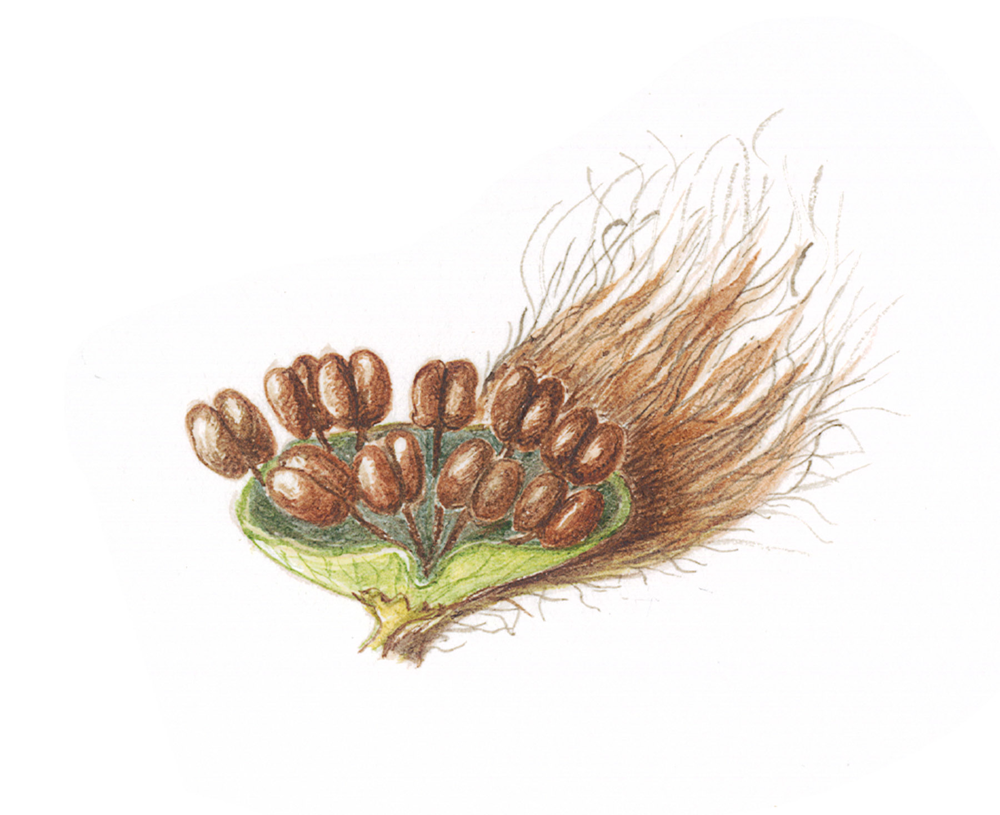

Education
MSc Health Data Science
University of Aberdeen, UK | Sep 2021 - August 2023 (part-time)
Instead of opting for a 60-credit research project, I have chosen to do two 30-credit courses each summer: Evaluating Policy Effects in Practice in year 1, and a work-based placement in year two.
- Introduction to Health Data Science
- Featuring a team project to develop an infographic on the topic of Patient and Public Involvement/ Engagement in Research. Link to project here, see slide 2 for my contribution: Infographic
- Developed a dashboard ‘Patients Discharged from Psychiatric Hospitals in Scotland, 2002-2020’, using ScotPHO data - see Projects page for more details
- Applied Statistics
- Linear and non-linear models
- Logistic regression
- \(\chi^2\) distributions and analysis of categorical data
- Health Informatics
- Data and information governance
- Ethics of data use and reuse
- Linked data and data specifications
- Investigated the impact of psychological interventions on diabetes-related distress during routine appointments and during follow-up
- Machine Learning for Healthcare
- Supervised and unsupervised classification
- Artificial intelligence applications in healthcare
- Algorithmic bias and risks
- Ethics of machine learning in healthcare, specifically the use of electronic health records (EHRs) to determine mental health presentations in emergency departments in Australia, across different demographics
- Evaluating Policy Effects in Practice
- Ethical frameworks and the use of AI in mental health care and research - I chose this theme as it is an area of particular interest that I will be continuing to develop over time. One of my primary outputs is a storyboard, a link to which can be found here.
- Evidence-based Health
- Systematic reviews and meta-analysis
- Reviewing evidence from randomized controlled trials on the impact of protein supplementation in elderly patients in hospital
- Database Systems and Big Data
- Design and creation and management of secure databases using MS Access, phpMyAdmin and MySQL Workbench
- Simple and complex transactions
- Implementation of database security protocols
- Transaction planning and scheduling
PhD Evolutionary Biology
University of Edinburgh, Royal Botanic Garden Edinburgh & The James Hutton Institute, UK | Sep 2007 - August 2011
Epiphyte diversity on Scottish Aspen (Populus tremula): a component of the extended phenotype
My thesis is in the process of being converted to Bookdown, with some revisions and updates from the original. Link here: aspen
I studied genotype x environment interactions and community genetics in a native and biologically important, but rare, tree.
- Carried out DNA microsatellite analysis of various ‘wild’ aspen clones found at RSPB Insh Marshes nature reserve to identify clones, and determine relationships within and between stands
- Carried out fieldwork in different sites across Scotland, collected count data of lichen, moss and liverworts growing on wild and experimental aspen clones to determine differences in community structure
- RSPB Insh Marshes
- Moray
- Lochgilphead
- Loch Lomond and Trossachs area (clones were not present however)
- Collected bark from clones to analyse phenolic glycosides and identify differences in chemical profile based on clonal identity
- Measured bark roughness to determine extent of genotype x environment effects and how this might influence (or be influenced by) epiphyte communities
- Applied various modelling techniques (linear models including regression, ANOVA, GLMM; ordination and classification techniques such as CCA, RDA, Mantel tests; dabbled in Structural Equation Models) to identify differences in epiphyte community structure between clones, difference in bark properties attributable to genotype, and the interactions between these effects
It was a lot of fun, and I would love to carry on, which is why I am continuing through publishing on Bookdown.
Plant aspen!
MSc Biodiversity and Taxonomy of Plants
University of Edinburgh & Royal Botanic Garden Edinburgh, UK | Sep 2005 - August 2006
- A combination of classical herbarium taxonomy, and molecular aspects of plant identification and classificaion
- My final project investigated the relationships between Prunus laurocerasus, Prunus lusitanica and allies from the Mediterranean and West and Central Asia.
- To be converted to Bookdown one day…
BSc (Hons) Botany
Reading University, UK | Sep 2003 - July 2005
A really good degree programme that unfortunately no longer exists, but gave a solid grounding in a variety of topics, such as:
- Macroevolution and microevolution
- Plant biodiversity
- Crop physiology
- Statistics and experimental design
- Plant identification
My final project was to map and attempt to classify Carpobrotus spp. growing on the Bournemouth-Southbourne coast in the UK, comparing phenotypes from the various entities found to existing taxonomic treatments. Also to be converted to Bookdown one day.